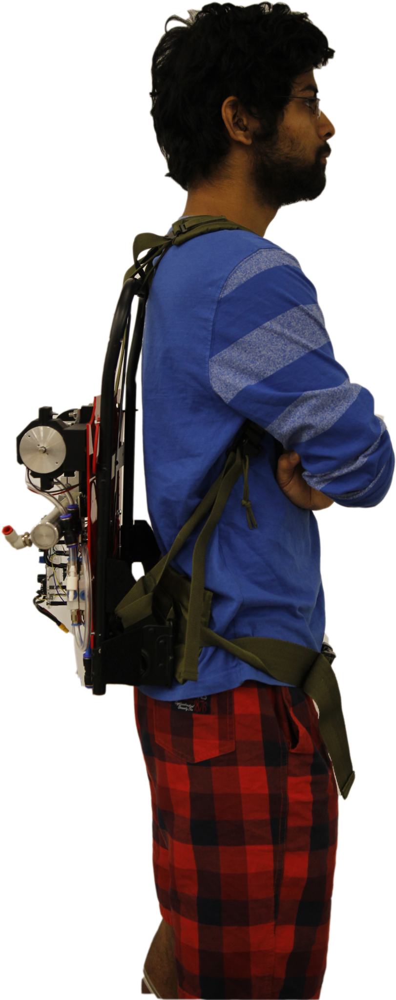
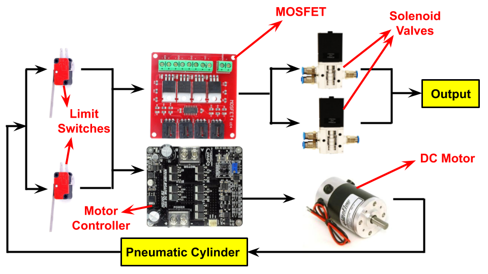
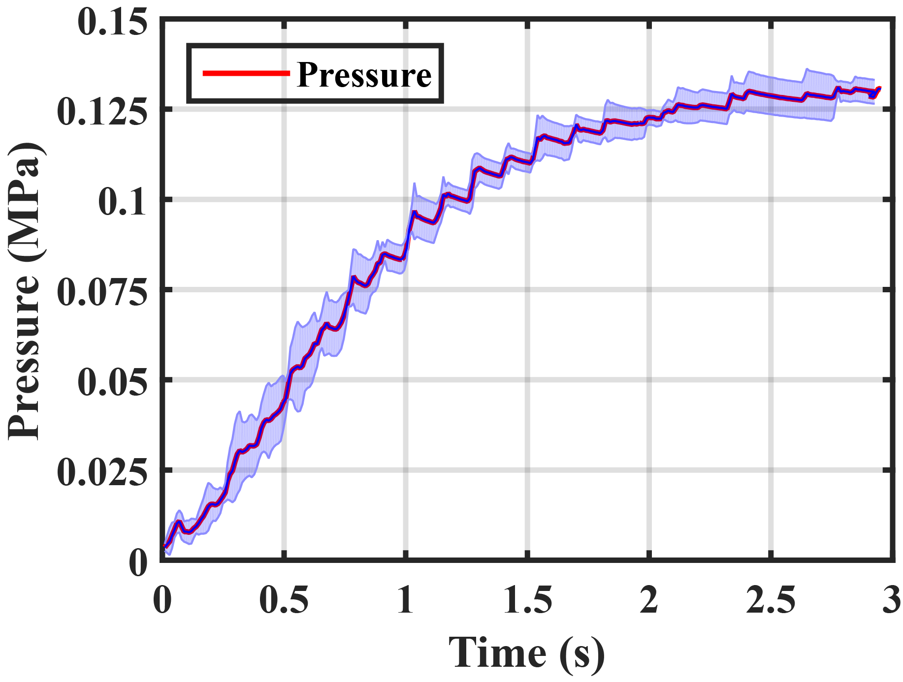
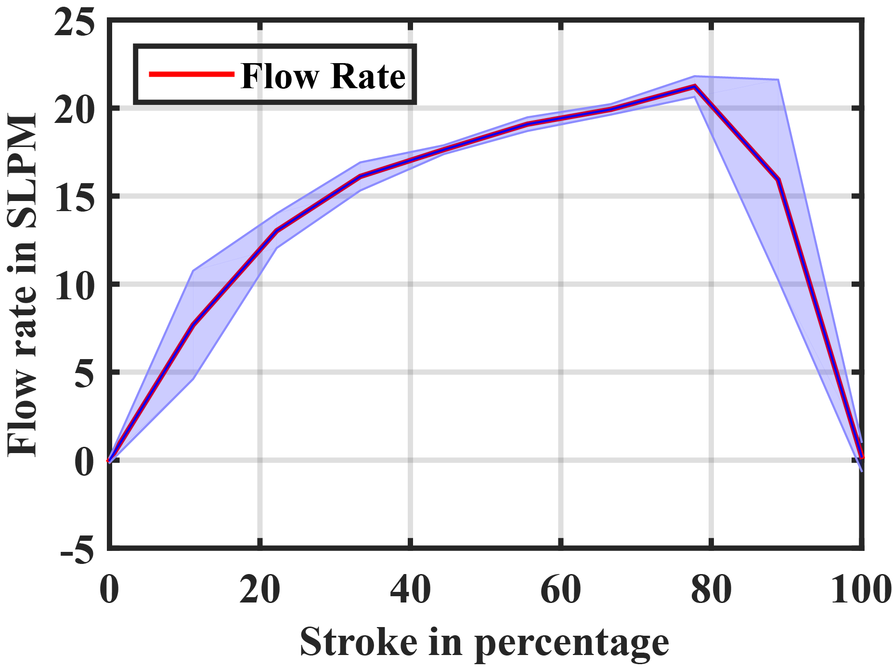

Arizona State University, USA · MS Thesis · Wearable Robotics · Pneumatics
Portable Pneumatic Source for Wearable Soft Robotics
Affiliation: Arizona State University, USA
This project focused on building a compact backpack-mounted pneumatic source capable of powering soft inflatable actuators without relying on an external compressed-air supply.
Project overview
Pneumatic soft exosuits can be lightweight and compliant, but many systems remain tethered because they require external compressed air. For wearable use, the pneumatic source must provide enough pressure and flow rate while remaining compact enough to be carried by the user.
I designed and built a portable pneumatic source using a high-torque DC motor, lead-screw drive, double-acting pneumatic cylinder, solenoid valves, limit switches, check valves, motor driver, MOSFET board, pressure/flow sensors, and a microcontroller-based control system.
My contribution
- Built the backpack-mounted portable pneumatic source for soft exosuit actuation.
- Integrated the DC motor, lead screw, pneumatic cylinder, support frame, valves, tubing, and electronics into a compact wearable system.
- Developed the electro-pneumatic switching architecture using limit switches, a motor controller, MOSFET board, and solenoid valves.
- Tested the pressure and flow output of the system to evaluate its ability to power soft pneumatic actuators.
Objectives
- Create a refill-free portable pneumatic source for wearable soft robotics.
- Reduce the size and height of the mechanism using a parallel lead-screw and cylinder layout.
- Generate sufficient flow rate for dynamic soft actuator inflation.
- Evaluate pressure and flow output experimentally.
Results
- The portable pneumatic source was successfully mounted on a backpack frame and worn by a user.
- The system generated a maximum pressure of approximately 0.131 MPa.
- The system generated a maximum flow rate of approximately 21.45 SLPM.
- The complete prototype demonstrated the feasibility of portable pneumatic actuation for untethered soft exosuit systems.
Tools and methods
Selected figures

Portable pneumatic source prototype. Backpack-mounted system integrating the motor, lead screw, pneumatic cylinder, valves, controller, battery, and support structure into a wearable pneumatic power source.

Wearable demonstration. The pneumatic source was mounted on a backpack frame so it could be carried by the user during untethered soft exosuit operation.

Electro-pneumatic architecture. Limit switches controlled stroke transitions, while the motor controller, MOSFET board, solenoid valves, and pneumatic cylinder coordinated air generation and output switching.

Pressure output testing. The prototype generated a maximum pressure of approximately 0.131 MPa when connected to the pneumatic actuator system.

Flow-rate testing. The system reached a peak flow rate of approximately 21.45 SLPM, supporting the fast inflation requirements of fabric-based pneumatic actuators.
These are your provided portable pneumatic system figures added directly to the portfolio project page.